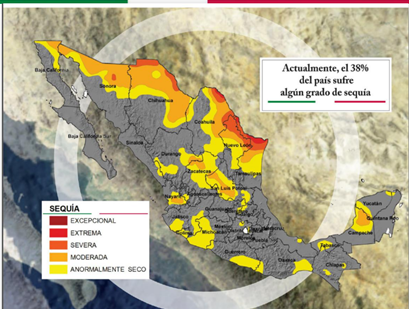
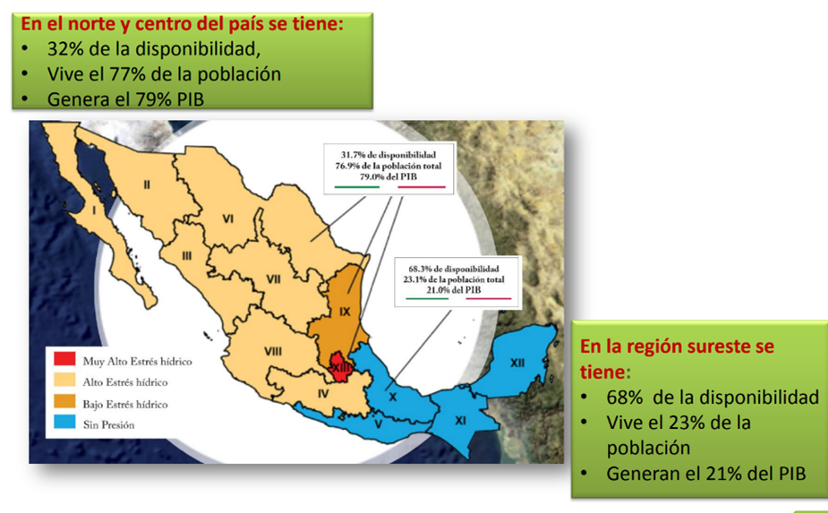
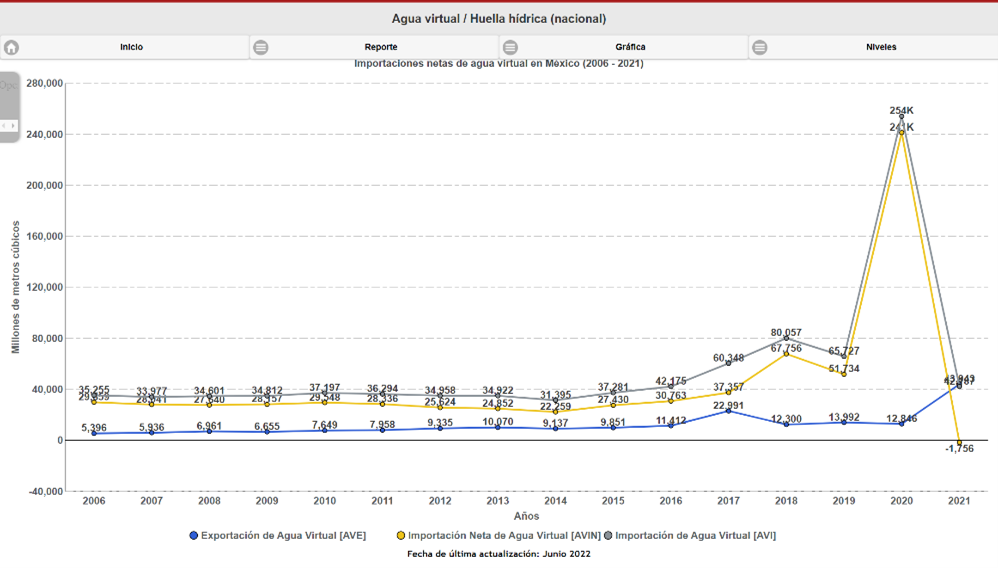

¿Qué es?
1Volumen
2Color/clasificación del agua
3Lugar de origen del agua
4Momento de extracción del agua
La huella hídrica se calcula como el consumo doméstico de los recursos hídricos, menos las exportaciones de agua virtual, más las importaciones de agua virtual.
Importaciones y exportaciones en México
México es un importador neto de agua virtual. En el año 2006 importó 29,859 hm³, con una tendencia creciente a partir del año 2000.
Los tres productos con los que más agua virtual exportó México en 2006 son los frutos comestibles, las legumbres y hortalizas y las carnes, que representan el 43% del total de agua virtual exportada.
Los principales productos que México importa son los cereales, las carnes, los frutos y las semillas, lo cual signi¬fica el 83% del total de las importaciones de agua virtual de México.
La huella hídrica de consumo en México es la octava mayor en el mundo, principalmente debido al tamaño de la población (11º país más poblado). Del total del consumo, únicamente 2.7% es industrial y 5.3% es doméstico. A nivel nacional, México tiene una huella hídrica de 197,425 mil Hm³.
Problemas de sequía en México
En 2006 cerca del 70% del territorio presento sequía y 15% sequía extrema.
El período de 2011 a 2012 fue uno de los más secos de los últimos 71 años. El 80% del territorio sufrió algún tipo de sequía y cerca del 40% fue extrema o afectó a 22 entidades y 604 municipios en la República


Consumo actual
En el año de 2020 se tuvo una gran importación neta de agua virtual alcanzando los 254 y 241 mil Lt de agua.

En promedio cada persona utiliza 1240m3 litros de agua al año. El estilo de vida que se lleva tal como la producción, consumo, hábitos, transporte, tecnología, entretenimiento, etc. involucran mucha agua.
El 86% de la huella hídrica de un mexicano consiste en productos alimentarios y bebidas, 6% otros productos agropecuarios (pieles y algodón principalmente), 5% consumo doméstico y 3% productos industriales.
Opciones para disminuir la huella hídrica
La huella hídrica en México se puede disminuir a través de:
Autor: Equipo 2